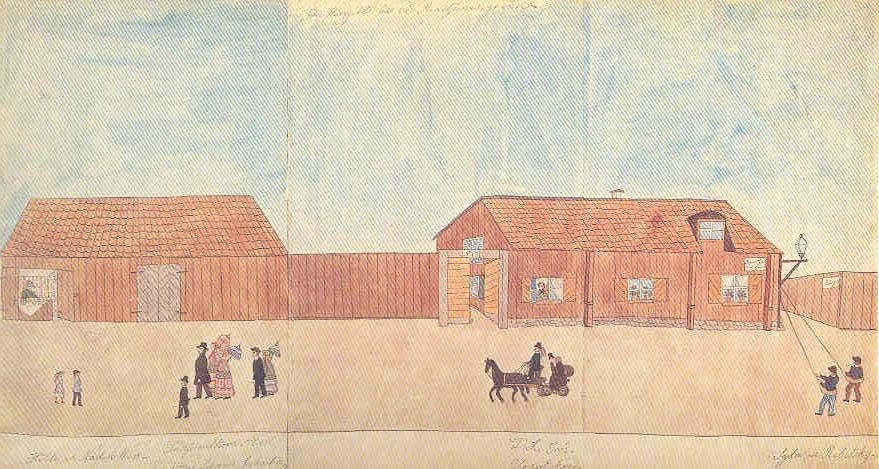

Södermalm i tid och rum
Dagligt liv på Renstiernas gataNedtill en blank bård där personernas namn antecknats.
Från vänster en bakelsegumma i sin bod. Den är på gammalt vis utfälld ur en timrad husvägg, och inuti klädd med ljus tapet. Nedanför står två barn som möter tullförvaltaren Alsell med familj.
I likhet med andra blad av samma längd är detta skarvat med två sömmar sytråd av linne.

På tvåbilder visas dåvarande Renstjärnasgrändens utseende med fru Bergqvists hus. Alldeles vid sidan av detta fanns ett bakelsestånd. Bland folket som rör sig på gatan märks bl a förvaltaren vid "Sjö-Tulls-Kammaren" Lud- vig Ahlsell med döttrar, söner och sonhustru. Tullförvaltaren bodde i Pilgatan 24 (nuv Folkungagatan).
Själv bodde Malmqvist vid Pilgatan 27.